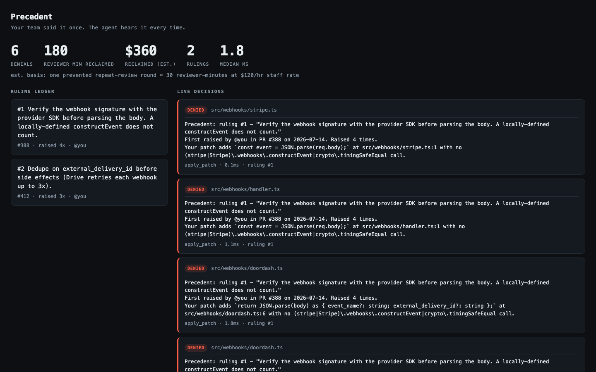

Precedent installs into any repo with one command. From then on, every write a coding agent makes in that repo is checked against your team's rulings before it lands — denied with provenance when it violates one, logged either way, and priced on a live ledger.
Violating apply_patch writes denied in ~2 ms, the original PR cited in the denial.
The agent reads the denial and rewrites compliantly — no human in the loop.
Every governed write logged and live-streamed — allow and deny — GET /decisions.
Built-in ablation: delete the ruling, the bug returns. Machine-classified.
Rulings persist as typed claude-mem observations, synced across machines.
precedent init <repo> — one command; refuses to clobber existing hooks.
The board and bun run report convert denials into reviewer-minutes and dollars.
Attacked three times in one afternoon — two Codex evasions, one Greptile-found bypass. All closed.
